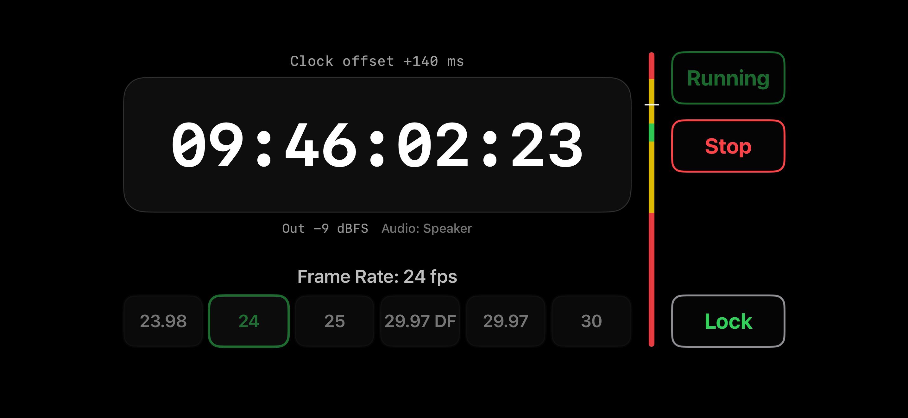
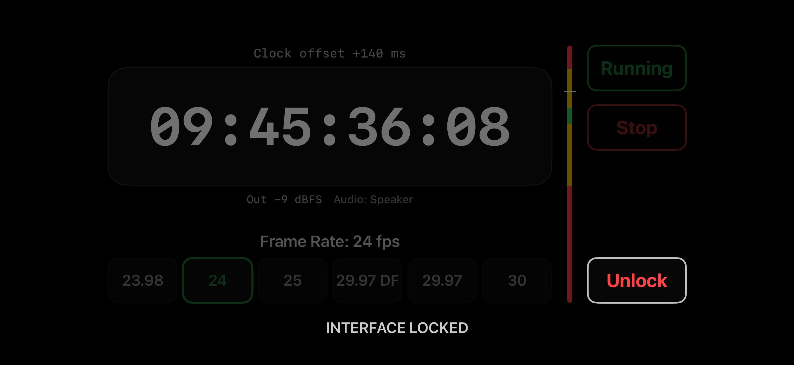

iPhone
Video LTC Generator creates a continuous SMPTE LTC signal.

SMPTE LTC from iPhone to camera
Generate linear timecode on the iPhone audio output and feed it to a camera, recorder, or audio channel for frame-accurate sync in post.
Purpose
Connect the phone to the camera with the appropriate audio cable and send LTC as a signal. The camera or recorder can decode it as timecode, while post-production gets matching timelines across multiple sources.
Connection
Video LTC Generator creates a continuous SMPTE LTC signal.
Use a USB-C/Lightning adapter, TRS/TRRS cable, or the camera's timecode input.
Record the signal through a timecode input or an audio channel for decoding.
What is LTC
Linear Timecode looks like a fast digital audio signal to the recording chain. It carries hours, minutes, seconds, frames, and format flags.
For reliable decoding, feed LTC as a clean mono/line signal without noise reduction, limiting, or automatic gain correction.
Audio level
The goal is a signal that the camera can read confidently without clipping the input. Set the phone output and camera input so the camera meter sits around -11 to -12 dBFS.
Indicator
Lock
When the interface is locked, an accidental touch cannot change the frame rate or stop generation during a shoot.

Drop-frame vs non-drop
At 29.97 fps, a non-drop counter slowly drifts away from clock time: about 3.6 seconds per hour. Drop-frame compensates by skipping frame numbers 00 and 01 at the start of most minutes.
Counts every frame number in sequence. Useful when a simple frame count is expected.
Skips selected numbers so timecode stays aligned with wall-clock time.
for 29.97 fps when real-time duration matters: broadcast, long recordings, or delivery timing.
when post-production expects normal frame numbering, or when working at 24, 25, or 30 fps.
Interface
The screen is built for set work: timecode is readable from a distance, Running/Stop is always visible, and Lock keeps settings fixed.
FAQ
Use the camera's dedicated timecode input when available. If the camera has no timecode input, record LTC into an audio channel and decode it later in post.
Set the output so the camera meter is close to -11 to -12 dBFS. A signal that is too hot can clip; a signal that is too quiet may decode unreliably.
No. Drop-frame timecode only skips certain frame numbers at 29.97 fps. The recorded video frames remain untouched.
Match the frame rate of the camera project. For 29.97, choose DF when you need clock-accurate running time, and NDF when your workflow expects normal numbering.
Lock prevents accidental taps from changing settings or stopping LTC while the phone is mounted, pocketed, or handled on set.
Confirm the cable path, disable automatic gain processing where possible, check the camera input mode, and verify that the level sits near the recommended range.